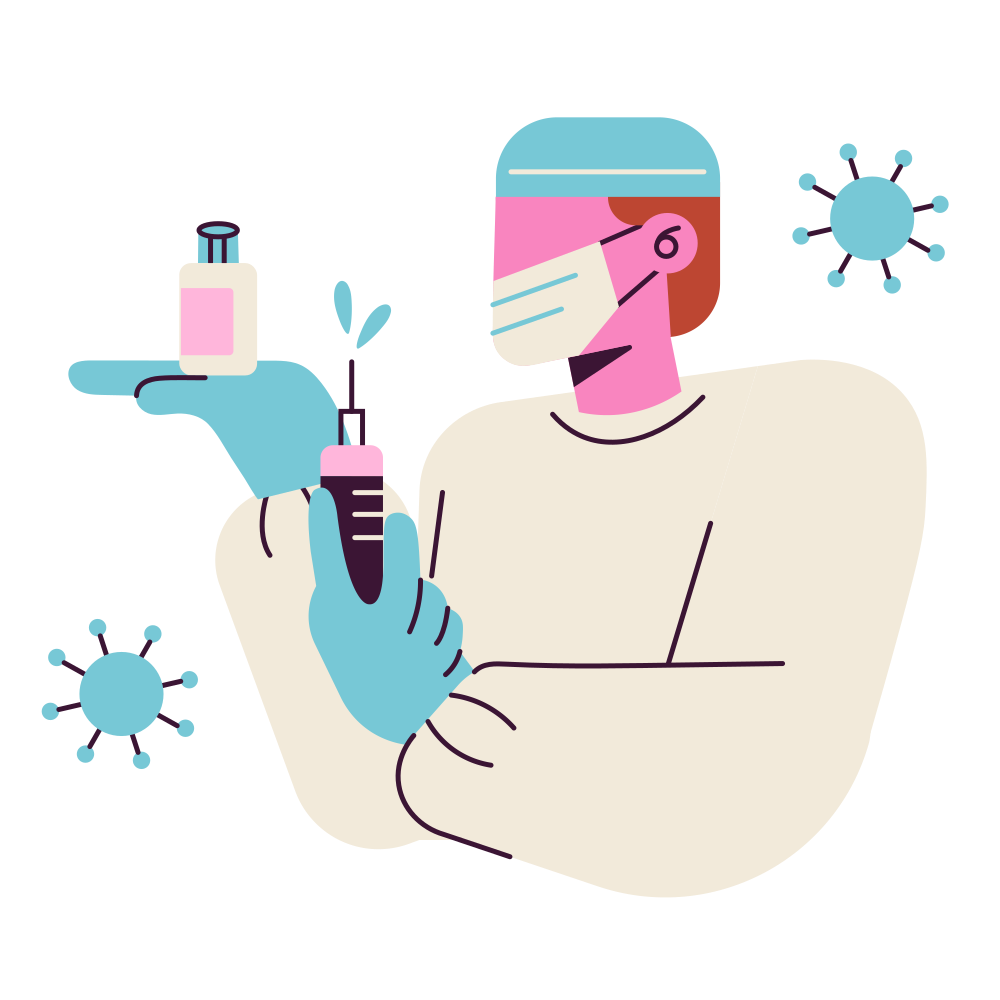
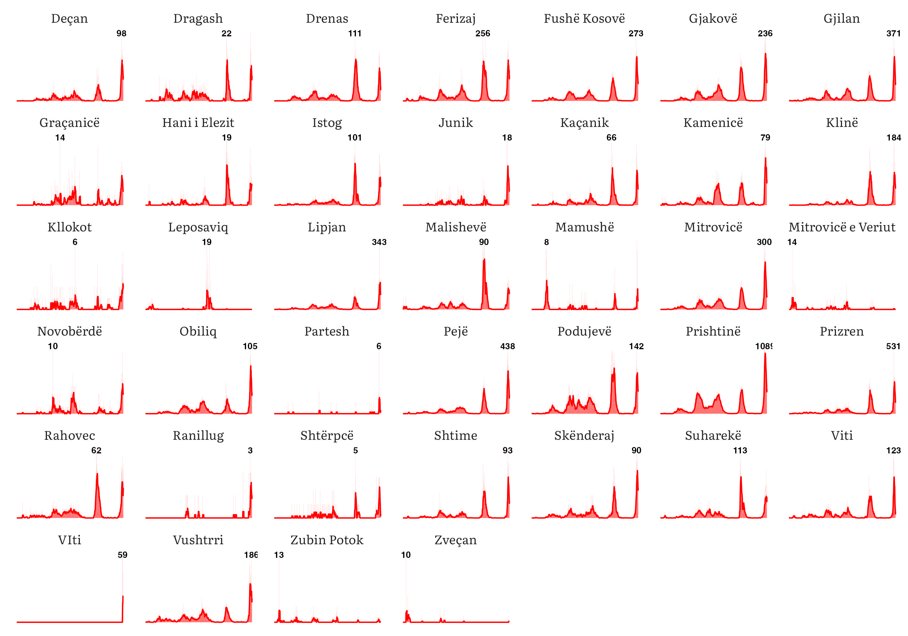
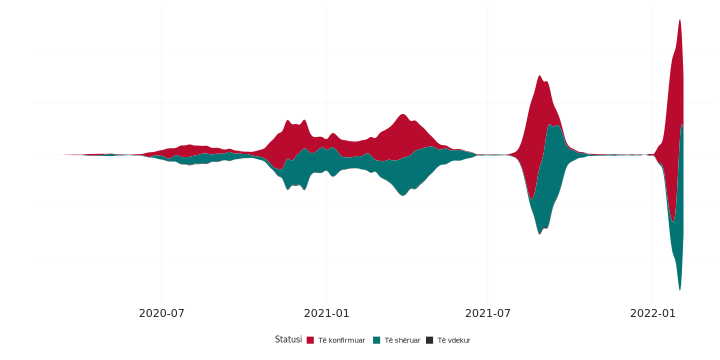
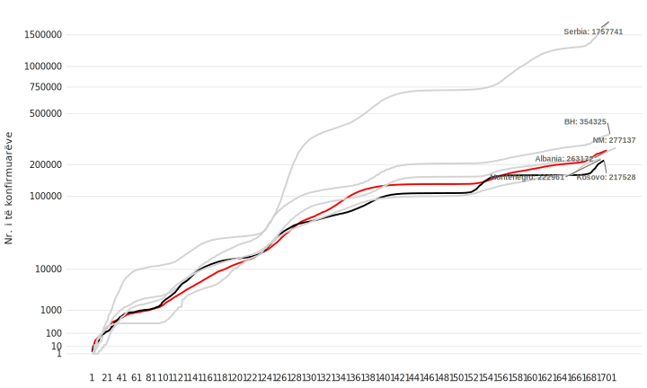

Home
Tjera
R Package
Vaksinohu!
Regjistrohu në https://ekosova.rks-gov.net

Kjo webfaqe nuk përditësohet që nga data 06 shkurt 2022. Faleminderit!
HISTORIKU I PANDEMISË ME KOMUNAT E Kosovës

Rrjedha

HISTORIKU I PANDEMISË NË REGJION
